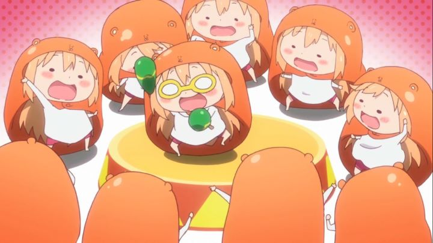

In 2015, "Himouto! Umaru-Chan" seemed to be one of the popular anime titles to beat. Even if you hadn't seen the show, you would be certain to recognize the show's mascot: a cute chibi-styled blonde girl in a orange-hamster hoodie. The show is clearly made with the Internet-generation in mind, full of meme-worthy moments (mostly in the opening credits), and featuring a relatable lead: a girl who would be happiest lounging around at home, playing video games and eating junk food all day. But Umaru Doma isn't like that outside of her home. At school, she's a model student, beautiful, polite, and always excelling in class. Rumors spread that she must be the heir to a wealthy corporation to have such an upbringing. But when she arrives to her one bedroom apartment, she kicks off her shoes and visibly shrinks to a fraction of her size under her house-hoodie, with a rude high-pitched voice demanding for food and games. She becomes too lazy to clean after herself, to get up from the floor to eat dinner, or even to get more snacks (in an early episode, she fantasizes training her pet hamsters to bring her chips on command). Umaru's older brother, Taihei, lives alone with her, working a full-time job and keeping the apartment clean, despite his childish sister's attitude. Being the only one aware of this secret personality, he gives her the nickname "himouto," a made-up word that loosely translates to "dried-fish girl." A rather nasty insult that doesn't fully make sense: Google Translate's literal translation of "with coat" makes a lot more sense. It's a fun premise for a slice-of-life comedy, but like similar anime, it's a one-note joke that doesn't go very far. Umaru's two personalities (three, if you include her arcade-queen one) have to be constantly checked to match the indoor and outdoor situation she's in, although she quickly finds a way to use these alternate versions of herself to her advantage (literally shrinking in size at home, even close friends confuse her as a secret little sister to herself). In each episode, Umaru tries to get her way without her brother's nagging, and Taihei tries desperately to make Umaru feel some responsibility for her lifestyle. This is the joke for the 12 episodes.Basically, Umaru is a brat. An adorable brat, but still a brat. She's like a five-year-old with the savvy of a sixteen-year-old. Thankfully, she never gets quite as annoying or infuriating as Haruhi Suzumiya, but there aren't many other lead characters that I would distrust like this. If you aren't a shut-in geek, her behavior and interests might be an even greater turn-off.The show seems to be aware of the limited number of jokes in the premise, so it relies on side-characters. The token archtypes are all present. Umaru's best friend from school is shy and clumsy (in a somewhat gross origin story, we learn she gets a crush on the first boy in Tokyo to look at her in the eye, after everyone else seems to solely focus on her large chest and avoid eye-contact). Another student is Umaru's rival, vowing to beat her at something, and being incredibly abnoxious about it. Yet another student glares at Umaru from the back of the class: we learn that she probably has an unhealthy crush on her. Even some of Taihei's co-workers become characters in the story. And everyone seems to have their own secret lives that they try to hide from their public friends. ... ultimately, the show stretches out developments with the side characters. For too long. Normally, each character might get a single dedicated episode that tells us everything, spending the rest of the series with them returning for the sake of jokes for those familiar with their personality. In "Umaru-Chan," we get a sense of who these characters are pretty quickly, but the show insists on not coming out and stating those details, saving it for a future episode. In some cases, those episodes never come, leaving us hanging and wanting in a series that wasn't really meant to have a story. And despite Taihei not really being the main character, he ultimately gets a total of three girls crushing on him (without real developments, of course).Long story short, the story isn't good. Even for a slice-of-life series, it's bad.All that aside, the comedy works well enough. Mostly thanks to Umaru's energetic personality being paired with a lot of visual gags. Umaru's visual form translates well for all sorts of jokes. She'll occasionally day-dream about flying into the clouds with her friends on the backs of dragons or fairy wings, the type of thing an absent-minded child would come up with when bored. There are several references to well-known video games and anime, some of which were recent in 2015, which ought to bring a chuckle to the average otaku. Visually, the show's colorful design and animation is mostly just servicable, but these occasional tangents allow for inspired camera positions, and occasionally 3D or pixel-based animation, all for the sake of the joke. These keep the show from being entirely boring after the first few episodes. If nothing else, it's refreshing to see cute girls pig out on candy or laze about in the house, a bit more realistic than how anime would typically depict the average woman.The overall English dub is just fine. But I do give extra credit to Emily Neves for voicing Umaru: she did a great job voicing the wildly different personalities of the character, from calm and reserved to hyper-active. Her deliverly when talking about "CO-LAAA" and "poe-TAE-toe CHIPS" is infectious. But the rest of the English cast doesn't hold up, and even if they did, they can't beat the sheer cuteness and fast-paced delivery of the original Japanese dub. Otherwise, the American release was impressive: it comes with subtitled Japanese commentary tracks for every episode (a fun extra for this specific show) and a set of mini-episodes, all dubbed in English. It's rare for a company to go so far with this many extras now-a-days, so props to Sentai Filmworks for the effort. And while the show is rated TV-14 in America, I found the humor to be (mostly) family-friendly, and the cuteness factor might make it an acceptable show to watch with kids, as long as they don't take after Umaru's behavior.Like its lead character, "Himouto! Umaru-Chan" goes out of its way to not try too hard, much to my frustration. Several simple character developments are promised and hinted at, but never delivered. But despite all of that, I kind-of love the character anyway, and to some extent, the series. If your wish in life is to be a coach potato, this might become a new favorite comedy, if only for finding a kindred spirit in this little hamster-girl.
- "Ani" More reviews can be found at : https://2danicritic.github.io/ Previous review: review_Highschool_of_the_Dead Next review: review_Howl's_Moving_Castle